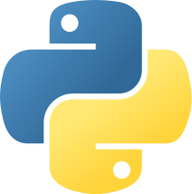
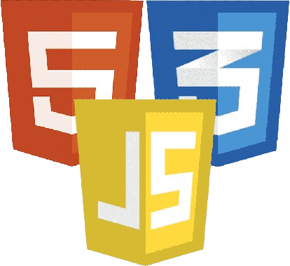
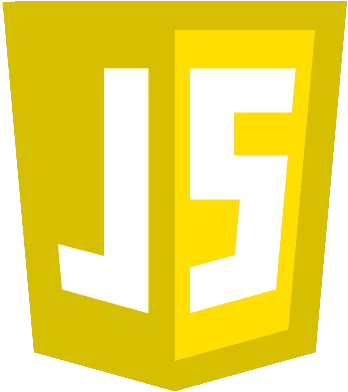
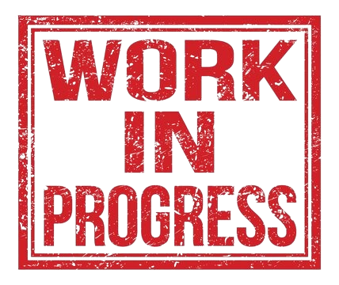

Projet n°1 : The Knight's Quest []
Ce projet étant le mini-projet de NSI fait en première donc durant l'année 2022-2023 fait entièrement en python. The Knight's Quest est un RPG (Role Playing Game) soit en français un jeu de rôle, il consiste en un chevalier arrivant dans un château après était banni de son ancien royaume, il doit donc effectuer des tâches dans le château.
https://github.com/Arkyan/The-Knights-Quest : Voir le projet directement en ligne
Projet n°2 : War Thunder Tips []
Notre mini-projet en NSI consiste en la création d'un site web dédié aux passionnés du jeu vidéo War Thunder, une simulation de guerre captivante. L'objectif de ce site est de servir de guide aux nouveaux utilisateurs qui rejoignent l'univers du jeu, tout en offrant un espace de discussion convivial grâce à un forum dédié. Ce projet a été entièrement conçu et développé par notre équipe.
https://arkyan.github.io/War-Thunder-Tips/ : Voir le projet sur Github
Projet n°3 : Un bot discord de quiz []
Ce bot est le 2e mini-projet de NSI en terminale, c'est donc un bot discord codé principalement en Javascript mais avec aussi une présence de Python, qui nous pose des questions auxquelles on doit répondre avec des choix ou à écrire de soi-même. Il possède un système de points et de classement
https://github.com/Yazouvv/QuizGenius : Voir le projet sur Github
 Projet n°4 : Un bot Discord personnel []
C'est un bot Discord pour mon utilisation personnelle, il est codé en Javascript et utilise la librairie discord.js. Il possède des commandes comme /clear pour retirer un certain nombre de message dans un salon, /reseaux pour afficher mes différents réseaux et enfin un /help pour pouvoir voir les commandes disponibles du bot.
https://github.com/Arkyan/L-aberrance : Voir le projet sur Github